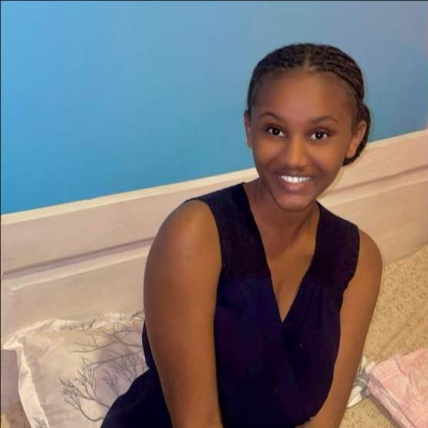

PROJECT 01
Community Safety Analytics System
A software project focused on organizing and analyzing community safety information to support understanding of incidents, trends and community needs.
I am a Software Engineering student at the Adventist University of Central Africa (AUCA), developing practical experience through academic projects, networking practice, Linux, web technologies and collaborative work.

Day Program · Expected graduation 2028
A student combining technology learning with real-world business experience.
I am MUTARUTWA Immaculate, a Software Engineering student at AUCA. My learning has included software development fundamentals, networking, Linux environments, web technologies and technical project work. I enjoy turning practical problems into organized technology solutions and continuing to grow through hands-on work.
Outside my academic work, I have managed Imma Business Ltd since 2020. That experience has strengthened my communication, customer relations, marketing, business management, teamwork and problem-solving abilities.
Technical and professional abilities developed through coursework, projects and business.
Creating and styling structured web pages with responsive layouts.
Software development fundamentals, system analysis and design concepts.
Practical exposure to network configuration and network operations.
Working with Linux environments and web server configuration.
Hands-on exposure to container deployment in a Linux course project.
Customer relations, marketing, entrepreneurship, teamwork and problem solving.
Academic and technical work that has helped me apply what I learn.
A software project focused on organizing and analyzing community safety information to support understanding of incidents, trends and community needs.
A system concept for organizing and managing drone-related information and activities.
A system designed to support item borrowing, tracking and management within a campus environment.
A collaborative project designed to support student visits and related activities in secondary schools.
A Linux-based technical project involving network configuration, web server setup and Docker deployment.
Experience gained through entrepreneurship and collaborative technology work.
Imma Business Ltd
Managing retail operations, product sales, customer relationships, marketing and day-to-day business responsibilities.
Imma Business
Participated in a collaborative project to develop the Smart Student Visit System for secondary-school students.
Bachelor of Science in Software Engineering
Day Program · Expected graduation 2028
A2 Diploma — Mathematics, Physics and Computer Science
Network operations learning completed through Internet Society Learning.
Internet Society Learning
March 2, 2026
Internet Society Learning
November 5, 2025
Native
Working proficiency